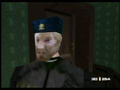
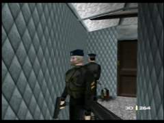

Un Niveau bien dur, surtout en 00 Agent, au Niveau des Gardes à la fin... Ce Niveau est fatalement linéaire au possible. Sachez juste passer les 2 Premieres Voitures rapidemment, ce sont les plus dures. Après c'est autre chose, mais c'est plus facile d'esquiver les Balles.


Détruire les Freins : Tous Niveaux
Y en a 6. Ils sont quand meme voyants, alors vous affolez pas. Faut juste que vous ne les oubliez pas, ça serait bete de faire demi-tour. Lorsque vous aurez détruit le Dernier Frein, 2 Janus Special Forces vont venir, et l'un d'eux à la Clé pour ouvrir la Porte juste avant Oroumov. Des fois, la Porte est deja ouverte.



Sauver Natalya : Tous Niveaux
Butez Oroumov et c'est fini. Natalya est "sauvée", enfin, il reste des trucs à faire...
Localiser la Base de Janus : Secret Agent / 00 Agent
Natalya s'en occupe toute seule comme une grande. Découpez la Plaque en attendant avec votre Montre !
Cracker le Mot de Passe de Boris : 00 Agent
Natalya va le trouver, juste après avoir localisé la Base de Janus. Attention à bien quitter le Train dès que Natalya a fini, sinon Big Boum Badaboum ! Note - Pour avoir plus de temps, une fois Oroumov tué, essayez de tirer sur Xenia. C'est hyper-dur, mais vous aurez du Temps en plus.
Se Sauver : Tous Niveaux


Une fois que Natalya a fini son travail, sortez du Train. Si vous avez assez d'energie, prenez à Droite toute et finissez le Niveau. Si vous n'avez pas trop de vie, butez les Gardes embusqués au fond à gauche, ils risqueraient de vous gacher votre Journée...